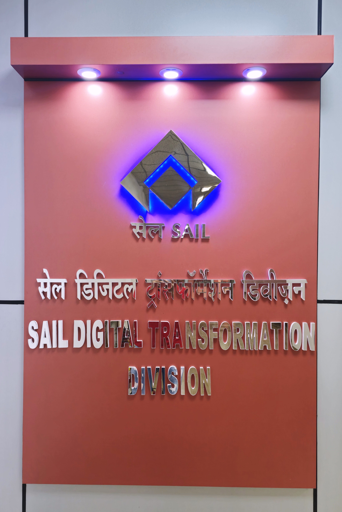

SAIL DIGITAL TRANSFORMATION DIVISION

Digital transformation is the integration of digital technology into all areas of a business, fundamentally changing how you
operate and deliver value to customers. It's also a cultural change that requires organizations to continually challenge the
status quo, experiment, and get comfortable with failure. This sometimes means walking away from long-standing business
processes that companies were built upon in favor of relatively new practices that are still being defined.
Since the end goal of a digital transformation journey is giving value to customers, it is prudent to say that a steel maker
should traverse the backward path of integrated steel business in the digital transformation journey.
Digitization is the conversion of analog to digital, whereas digitalization is the use of digital technologies and digitized data
to impact how work gets done, transform how customers and companies engage and interact, and create new (digital)
revenue streams. Digitization refers to the internal optimization of processes (e.g., work automation, paper minimization) and results in cost reductions. Finally, digitalization is a strategy or process that goes beyond the implementation of technology
to imply a deeper, core change to the entire business model and the evolution of work.
The outcome of digitization and digitalization: an agile organization, ready to adapt to the rapid evolution of technology. Although business leaders often use digitalization as an umbrella term for digital transformation, the terms are very different. Digital transformation requires a much broader adoption of digital technology and cultural change. Digital transformation is more about people than it is about digital technology. It requires organizational changes that are customer-centric, backed by leadership, driven by radical challenges to corporate culture, and the leveraging of technologies that empower and enable employees.